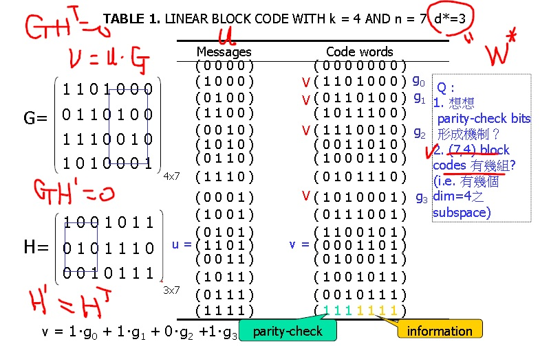
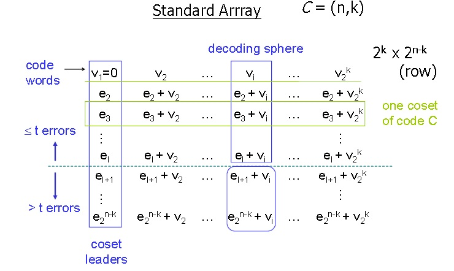
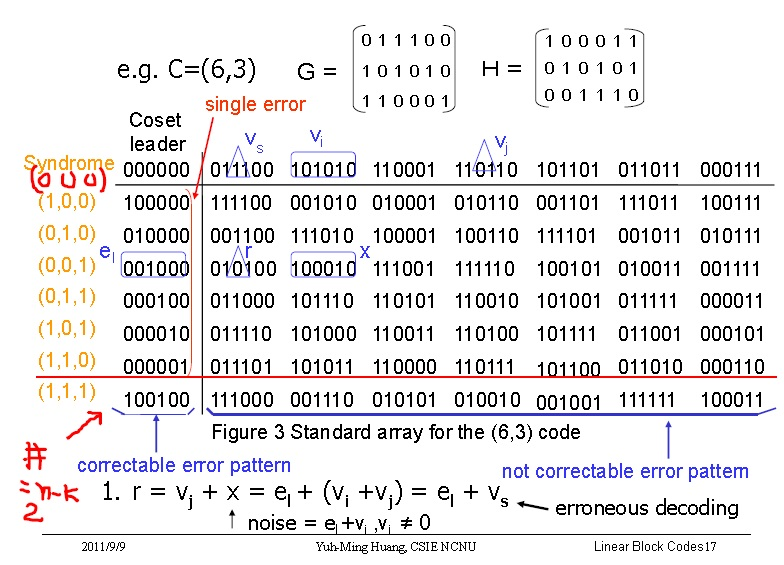

TABLE 1中message(u)與code word(v)的關係為 v = u‧G ，u為原始資訊，透過hamming編碼得到code word，code word前3個bit為parity-check，後4個bit為message。
在這邊先介紹何謂hamming distance，每個hamming code的每個元素都是0跟1，hamming code定義是兩個hamming code之間有幾個不同的元素。例：0010跟1011的hamming distance為2。
在TABLE 1裡，由於message長度只有4，每個message與message的hamming distance最小為1，經過hamming編碼後的code word有7個bit，hamming distance最小值為3，可以在錯一個bit的情況下自動更正錯誤。
當接收者收到錯一個bit的code word時，將此error code與其他code word比較，找出hamming distance為1的code word，此code word就是接收者收到的正確code word。因為任兩個code word之間的hamming distance至少為3(0000000,1101000)，所以當其中一個(0000000)錯了一個bit(0000001)，會與原本的code word有1個bit的差距(hamming distance為1)，然後跟第2接近code word(1101000)的hamming distance為2。
|  |  |
| TABLE 2 | TABLE 3 |